Get Started with StatPlus
StatPlus for Mac® runs as a standalone spreadsheet app but also can read data from documents opened in the Microsoft Excel™ (versions 2004, 2008, 2011, 2016, 2019, 2021) or Apple® Numbers® apps. All of the StatPlus features are available from the StatPlus main menu.
 Migration Guide for Excel Analysis Toolpak (ATP) users is available here.
Migration Guide for Excel Analysis Toolpak (ATP) users is available here.
To perform an analysis, please follow these steps:
-
Launch the StatPlus
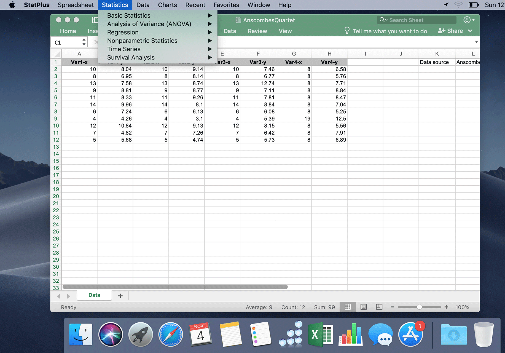
-
Select a spreadsheet app
With StatPlus:mac 7 you can analyze data directly from the Microsoft Excel app, Apple Numbers app (all features are supported except the combined charts) or use the internal (built-in) StatPlus spreadsheet.
Please be sure to select the data source in the Spreadsheet menu before running an analysis: external - Microsoft Excel or Apple Number, or the built-in spreadsheet.
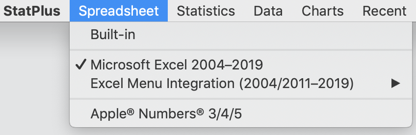
If you are using StatPlus with Excel - we recommend that you have only one Excel copy installed.
-
Open a dataset
For the built-in spreadsheet - use the File→Open command to import a dataset, or open a dataset in an app you selected from the Spreadsheet menu - Microsoft Excel or Apple Numbers.
Sample datasets are available here. You can also open a dataset from a command help page, when available.
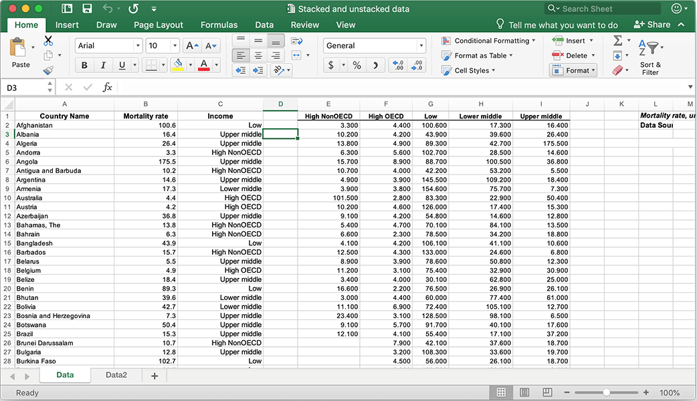
You do not need an active Microsoft Office license/subscription to use Microsoft Excel as a data source.
Run a command
Run the Statistics→Basic Statistics→Descriptive Statistics command from the StatPlus menu or from the app toolbar (built-in spreadsheet).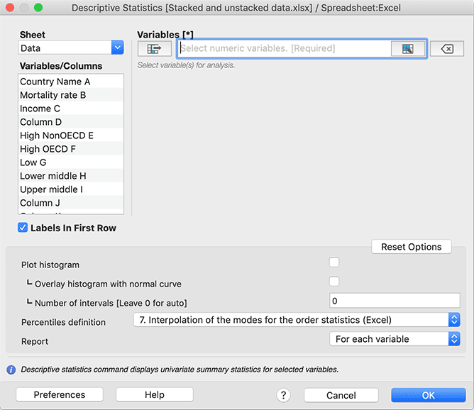
Select input variables for analysis
To select variables (cell range, column or several columns) for analysis you can either use the list of variables (columns) or the button in the range input field.
a) Select columns with variables from the list.
This way, you can quickly select non-adjacent columns and columns with thousands of rows.
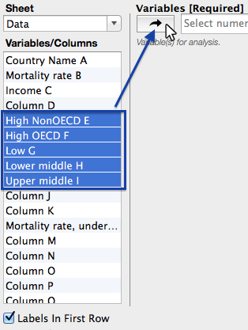
b) Select a range.
This way, you can select any range of cells, such as B2:F35 or F4:M61.
Click the button in the input field.
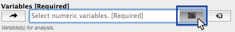
An Excel window will be activated, and you will be able to select a range.
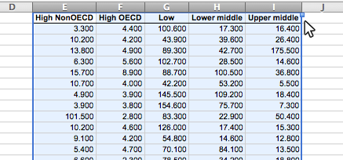
Select the range as shown in the figure and click on the StatPlus:mac icon at the Dock.
The selected range will be used as a data source for the Variables parameter of the Descriptive Statistics command.
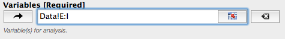
Please be sure to select a range with labels if the "Labels In First Row" option is selected.If you selected the wrong range or column - click the Clear button
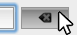
to clear the input field or do the right-click on the variable "token" to remove a single variable or range.Regardless of the way you selected variables - please check if the "Labels in first row" option has the correct value. If the data range has no labels (headers) in the first row - uncheck this option.

If there is an issue with getting data from Excel or Numbers - please click here to open the troubleshooting page for more information.
Set the command-specific options
For example, to add a histogram to the Descriptive Statistics report, check the Plot histogram and Overlay histogram with normal curve options in the Options panel.
These options vary depending on the selected command. To reset the options to default values - click the Reset Options button.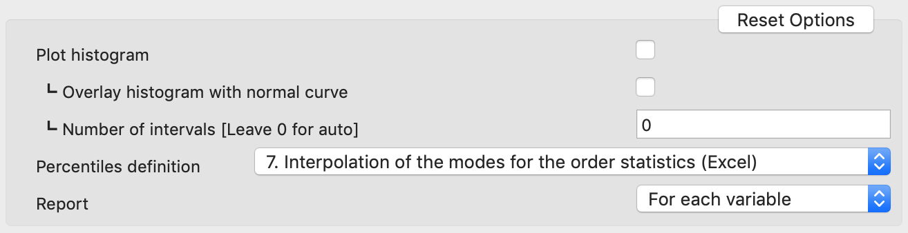
Core preferences and formatting
If you want to change the default font for reports, default alpha value, or how missing values are removed, use the Preferences button to open the app's preferences dialog. Details for each item of the Preferences dialog box are covered here.
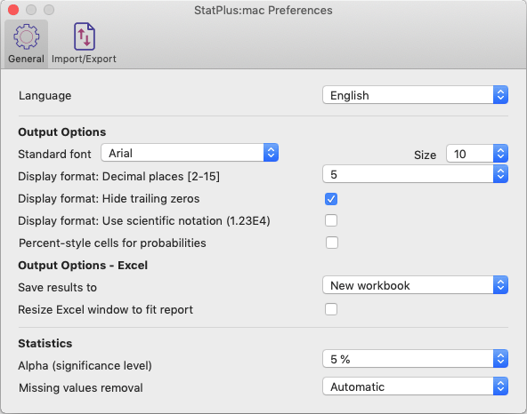
Get results
Click the OK button in the data input dialog and results will be shown in a new workbook/worksheet (for Excel users: default output mode can be changed in the Preferences window).
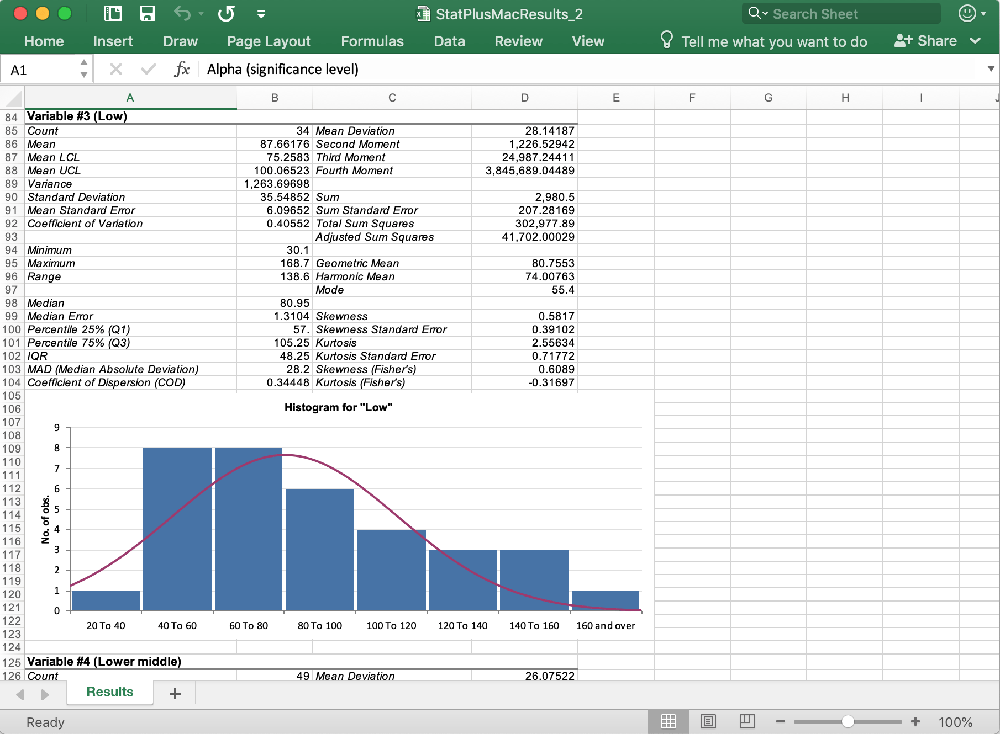
Support
If you have any questions or issues, please do not hesitate to contact our support team.